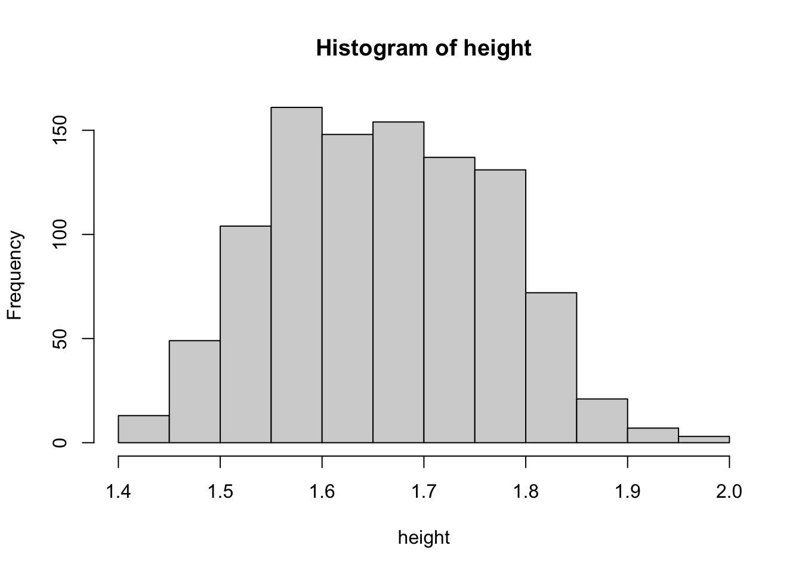

Below you will find code to simulate data from a mixture of univariate Gaussians, and estimate that mixture (LPA model) using the EM algorithm. The code is intended to be easy to understand and as simple as possible, while still doing the job. You can copy code into your R environment by clicking the copy icon in the top right of each code block.
Exercises
After looking through the code below, do the exercises in this section. Your instructor will of course be around to help and collaboration among participants is encouraged.
Below the regular questions, you will find a few “BONUS” questions. These are for those among you who are looking for a serious challenge, and you will likely find the difficulty level of these questions considerably higher. Do not worry if you do not understand these BONUS questions. Their completion is not needed for an applied understanding of LCA!
Exercises
Read the simulation code. Do you have any questions?
Read the function runit. Do you understand all steps?
Code understanding check:
Why is the function dnorm used? Why is it used twice?
What is happening here: post <- pman / (pman + pwom)? What is the intuitive explanation of this formula?
Why is weighted.mean used rather than just mean?
Why are the weights chosen the way they are?
What is the function of the for loop? When will it stop? Can you think of a different stopping rule?
Model understanding check:
How does the EM algorithm know which group refers to men and which group refers to women? (Hint: this is a trick question)
What is the height of the normal distribution curve (probability density) for:
A 1.5 meter tall man
A 1.8 meter tall man
A 1.5 meter tall woman
A 1.8 meter tall woman
From part (b), calculate the posterior probability to belong to the “women” class for:
A 1.5 meter tall person of unknown sex (That is, calculate \(P(\text{Sex}=\text{Woman} | \text{Height} = 1.5)\))
A 1.8 meter tall person of unknown sex (same as above)
Below, it states, “Guessing people’s sex based on their posterior probability is not perfect.” Why is this the case?
By changing the values of the relevant variables below, experiment with different settings for the means and standard deviations. Attempt to create a situation in which:
The cross-table between guessed class and true class is near-perfect;
The cross-table between guessed class and true class is near-useless. What do you conclude?
Change the sample size to the following settings and report your findings: \(n = 20, 50, 100, 500, 1000, 10000\). (Be sure to re-set the parameter values for the means and standard deviations to their original values).
BONUS: In this exercise, we completely ignored the fact that the “prior” probabilities \(\pi = P(\text{Sex} = \text{Woman})\) and \(1-\pi\), which determine the class sizes, are not really known in practice. In other words, we set \(\pi\) to its true value, \(\pi = 0.5\) in our implementation. In practice, \(\pi\) will be a parameter to be estimated. Implement code that does this. (Hint: you will need to adjust the E-step by using Bayes rule. The M-step for \(\pi\) is just pi_est = mean(post).) Check your code by setting n to a large value, changing prob=0.5 in the simulation code to some substantially different number, and checking that your estimate corresponds to the true value.
BONUS: The log-likelihood for this model is \[
\ell(\mu_1, \mu_2, \sigma_1, \sigma_2 ; y) = \sum_{i = 1}^n \ln \left[
\pi \cdot \text{Normal}(\mu_1, \sigma_1) +
(1-\pi) \text{Normal}(\mu_2, \sigma_2)
\right].
\] Write code that calculates this log-likelihood, loglik, at each iteration of the EM for-loop. Double-check your code against the output of flexmix (or another package that provides this output).
BONUS: Using the result from (7), implement code that terminates the for loop when the absolute relative decrease in log-likelihood, abs((loglik_current - loglik_previous)/loglik_current), say, is less than a tolerance value such as 0.001.
Data simulation
We first simulate some data ourselves.
set.seed(201505) # To reproduce the same "random" numbers# These are actual estimated values from the NHANES study.# We will take these as the true means and standard deviations true_mean_men <-1.74#mtrue_mean_women <-1.58#mtrue_sd_men <-0.08#mtrue_sd_women <-0.07#m# Generate fake data from the mixture distributionn <-1000# Sample sizetrue_sex <-rbinom(n, size =1, prob=0.5) +1# Height is normally distributed but with different means and stdevs for men and women.height <-rnorm(n, c(true_mean_men, true_mean_women)[true_sex], c(true_sd_men, true_sd_women)[true_sex])# Look at the datahist(height)

Rolling our own EM algorithm
Now pretend we don’t know true_sex and try to estimate (guess) mean_men, mean_women, sd_men, and sd_women…
Define a function runit that will run the model when called. It will return the estimated posterior probabilities to belong to one of the classes.
runit <-function(maxit=3, sep_start=0.2) {# Choose some starting values. I choose inaccurate ones on purpose here guess_mean_men <-mean(height) + sep_start # We need to start with differences guess_mean_wom <-mean(height) - sep_start guess_sd_men <-sd(height) guess_sd_wom <-sd(height)cat("Iter:\tM:\tF:\tsd(M):\tsd(F):\t\n---------------------------------------\n")cat(sprintf("Start\t%1.2f\t%1.2f\t%1.3f\t%1.3f\n", guess_mean_men, guess_mean_wom, guess_sd_men, guess_sd_wom))for(it in1:maxit) {# Posterior probability of being a man is the estimated proportion of the # overall height of the probability curve for men+women # that is made up by the probability curve for men: pman <-dnorm(height, mean = guess_mean_men, sd = guess_sd_men) pwom <-dnorm(height, mean = guess_mean_wom, sd = guess_sd_wom) post <- pman / (pman + pwom)# The means and standard deviations for the groups of men and women are# obtained simply by using the posterior probabilities as weights. # E.g. somebody with posterior 0.8 of being a man is counted 80% towards# the mean of men, and 20% towards that of women. guess_mean_men <-weighted.mean(height, w = post) guess_mean_wom <-weighted.mean(height, w =1-post) guess_sd_men <-sqrt(weighted.mean((height - guess_mean_men)^2, w = post)) guess_sd_wom <-sqrt(weighted.mean((height - guess_mean_wom)^2, w =1-post))# Output some of the resultscat(sprintf("%d\t%1.2f\t%1.2f\t%1.3f\t%1.3f\n", it, guess_mean_men, guess_mean_wom, guess_sd_men, guess_sd_wom)) }return(post) # Return the posterior probability of being a man}
Now run the EM algorithm using our very own runit function.
## Run the model!# Use height data to run the EM algorithm that estimates the means and stdevs of# interest. Some intermediate output will be written to the screen.post <-runit(maxit=5, sep_start=0.2)
How good are we at guessing people’s true class membership?
Guessing people’s sex based on their posterior probability is not perfect. We can see this by making a cross-table between the guessed class and the true class (which here we happen to know because we created that variable ourselves in the simulation). So we guess the class based on the posterior probability and then tabulate this against the true class.
sex <-as.factor(true_sex)# Guess woman if posterior probability of being a man is less than 50%:guess_person_sex <-as.factor(post <0.5) levels(sex) <-levels(guess_person_sex) <-c("Man", "Woman")knitr::kable(table(guess_person_sex, true_sex))
1
2
Man
436
60
Woman
83
421
This table gives the probability of being classified as a man/woman, given that you truly are one:
This table is sometimes called the classification table. It is a measure of separation between the classes. In practice, it cannot be calculated because we do not have the true_sex. Instead, an estimate can be calculated using the posterior probabilities. If these are well-calibrated (correspond to the true uncertainty about class membership), then calculating the within-guess mean of the posterior should give the desired classification table.
count_guesses <-tabulate(guess_person_sex)tab <-rbind(tapply(post, guess_person_sex, mean), tapply(1- post, guess_person_sex, mean))# The table now estimates the probability of true class given guess. # We first recalculate this to a simple crosstable with counts.t(tab * count_guesses) |> knitr::kable(digits =1)
Man
439.5
57.4
Woman
60.6
442.4
Again we can show the table using column proportions, to give an estimate of the chance of correct classification given true class membership.